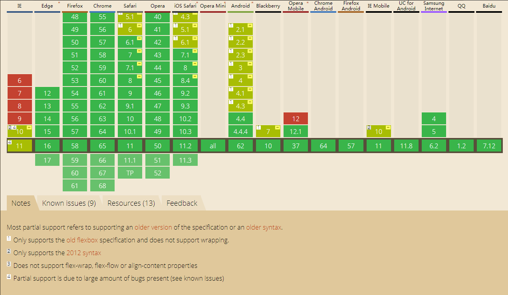
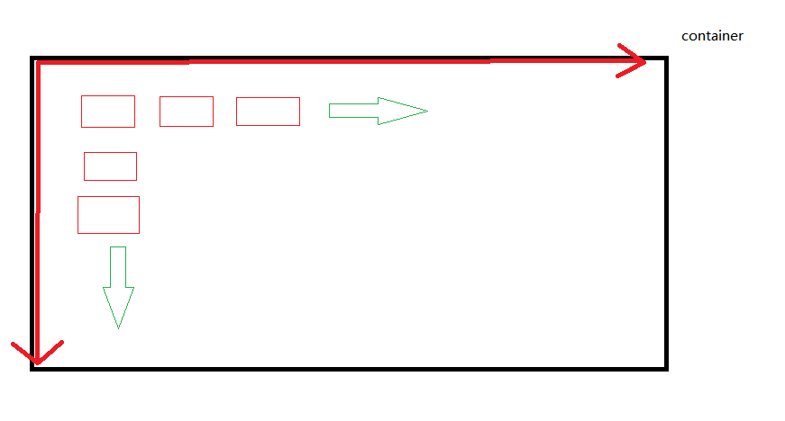

网页布局（layout）是我们前端的一个基本功，也是css应用的一个重点，也就是说这个css技能是我们前端必备技能。传统的布局也就是盒模型中加之display、position、float属性来实现盒模型中的布局，而且传统方式布局，基本都是固定的，如果需要小的变动会需要重新去改动，在2009年的时候W3C提出了一种新的布局方案---flex布局，可以简便完整的实现目前常用的各种布局，直至目前，各浏览器的支持性也都很良好，对于IE也都部分支持了，移动端更是一片绿，所以flex布局的未来会很广阔(Flex 是 Flexible Box 的缩写，意为"弹性布局"，用来为盒状模型提供最大的灵活性)。

flex布局首先是建立在盒模型基础上的，也就是说至少要拥有容器和容器成员，那么这个容器会存在两个轴，也就是两个方向，水平方向和垂直方向，水平的方向是面对屏幕，从左往右的，垂直方向是从上往下的。实际上就是说在容器内的容器成员是自上而下和自左而右的方向去排列。

以下这几个属性是设置在容器上的：
这个属性决定主轴的方向（即容器元素的排列方向）。
.box {
}
例如下面demo：
默认情况下，项目都排在一条线（又称"轴线"）上。flex-wrap属性定义，如果一条轴线排不下，如何换行.
.box{
}
例如下面demo：
flex-flow属性是flex-direction属性和flex-wrap属性的简写形式，默认值为row nowrap（两个属性值之间以空格隔开）。
justify-content属性定义了项目在主轴上的对齐方式。取值有这几种：
.box {
}
例如下面demo：
align-items属性定义项目在交叉轴（垂直方向）上如何对齐。取值有这几种：
.box {
}
例如下面demo：(最后两个都是属性为stretch，最后一个是容器元素高度设置为auto)
align-content属性定义了多根轴线的对齐方式。如果项目只有一根轴线，该属性不起作用。取值有这几种：
.box {
}
例如下面demo：
以下这几个属性是设置在容器上的：
属性定义项目的排列顺序。数值越小，排列越靠前，默认为0。
flex-grow属性定义项目的放大比例，默认为0，即如果存在剩余空间，也不放大。如果所有项目的flex-grow属性都为1，则它们将等分剩余空间（如果有的话）。如果一个项目的flex-grow属性为2，其他项目都为1，则前者占据的剩余空间将比其他项多一倍。
flex-shrink属性定义了项目的缩小比例，默认为1，即如果空间不足，该项目将缩小。如果所有项目的flex-shrink属性都为1，当空间不足时，都将等比例缩小。如果一个项目的flex-shrink属性为0，其他项目都为1，则空间不足时，前者不缩小。 负值对该属性无效。
flex-basis属性定义了在分配多余空间之前，项目占据的主轴空间（main size）。浏览器根据这个属性，计算主轴是否有多余空间。它的默认值为auto，即项目的本来大小。它可以设为跟width或height属性一样的值（比如350px），则项目将占据固定空间。(意味着会压缩其他项目来满足此项目的设定)
flex属性是flex-grow, flex-shrink 和 flex-basis的简写，默认值为0 1 auto。后两个属性可选。该属性有两个快捷值：auto (1 1 auto) 和 none (0 0 auto)。 建议优先使用这个属性，而不是单独写三个分离的属性，因为浏览器会推算相关值。
align-self属性允许单个项目有与其他项目不一样的对齐方式，可覆盖align-items属性。默认值为auto，表示继承父元素的align-items属性，如果没有父元素，则等同于stretch。该属性可能取6个值，除了auto，其他都与align-items属性完全一致。
取值如下：
.item {
}
最后在使用的过程中别忘记首先在容器上添加display:flex;属性哦，不然后面的一切都是徒劳！